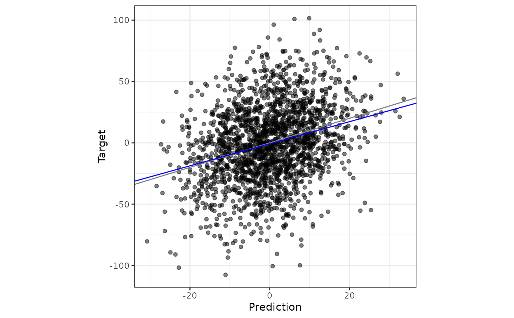
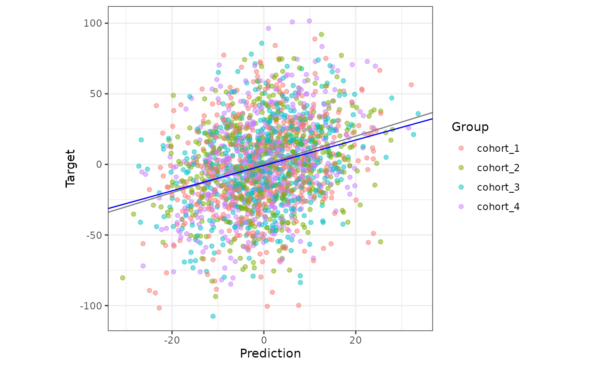

Compares predictions, for example (genomic) EBVs, with the values they are
meant to predict (the target), for a set of validation animals. The target
can be pre-corrected or raw phenotypes, true breeding values, or (genomic)
EBVs from a more complete or different evaluation. Returns the correlation,
the regression of the target on the prediction (slope and intercept), the
mean difference, and the mean squared error (MSE) and its square root (RMSE).
Optionally, standard errors are estimated by bootstrapping over animals, and
a scatter plot of the target on the predictions is returned.
Usage
validate_prediction(
prediction,
target,
h2 = NULL,
var_a = NULL,
group = NULL,
bootstrap = FALSE,
n_boot = 10000L,
ncpus = 1L,
plot = FALSE,
plot_subgroups = FALSE
)Arguments
- prediction
A numeric vector of predictions, for example EBVs from a (genomic) evaluation. It is plotted on the X axis.
- target
A numeric vector of the values the predictions are meant to predict, for example pre-corrected phenotypes or true breeding values. It has the same length and order as
prediction, and is plotted on the Y axis.- h2
Optional single number in (0, 1]: the heritability. When provided,
accuracy = correlation / sqrt(h2)is also returned. It is only meaningful whentargetis a pre-corrected phenotype and the animals are validated on their own records. Defaults toNULL.- var_a
Optional single positive number: the additive genetic variance. When provided, the root mean squared error in genetic standard deviations,
rmse_in_GSD, is also returned. Defaults toNULL.- group
Optional vector (character, factor or numeric) with the group of each animal, with the same length and order as
predictionandtarget. Used byplot_subgroups; it does not change the statistics. Defaults toNULL.- bootstrap
Logical. If
TRUE, standard errors are estimated by bootstrapping over animals with replacement. Defaults toFALSE.- n_boot
A single whole number of at least 2: the number of bootstrap resamples. Defaults to
10000.- ncpus
A single whole number of at least 1: the number of CPUs used for the bootstrap. Defaults to
1, which runs serially.- plot
Logical. If
TRUE, also return a ggplot2 scatter plot oftargetonprediction, with a grey line of slope 1 and a blue line of the fitted regression. The axis labels are generic; relabel them by adding+ ggplot2::labs(x = ..., y = ...). Defaults toFALSE.- plot_subgroups
Logical. If
TRUE(andplot = TRUE), colour the points bygroup, which helps to spot heterogeneous groups. It needsgroup. Defaults toFALSE.
Value
A list with two elements, stats and plot.
stats is a data frame with one row per statistic and a column value.
With bootstrap = TRUE it also has a column SE, the bootstrap standard
error (NA for n). The rows are, with x being the predictions and
y being the target:
n: the number of pairs used.correlation:cor(x, y).slope:cov(x, y) / var(x), the regression ofyonx. 1 means no dispersion bias.intercept:mean(y) - slope * mean(x).mean_diff:mean(x) - mean(y).mse:mean((x - y)^2).rmse:sqrt(mse).rmse_in_GSD:rmse / sqrt(var_a). Only whenvar_ais provided.accuracy:correlation / sqrt(h2). Only whenh2is provided.
plot is a ggplot object when plot = TRUE, and NULL otherwise.
Regression of the target on the prediction
The slope and the intercept come from regressing target on prediction,
so a slope of 1 means no dispersion bias. mean_diff is the level bias: the
mean of the predictions minus the mean of the target.
Mean squared error
mse and rmse measure the distance between each prediction and its
target, so they include the level bias and the dispersion: mse equals
mean_diff^2 plus the variance of prediction - target (with n as the
divisor).
Note: They are only meaningful when both vectors are on the same scale,
for example a partial and a whole EBV, or EBVs and true breeding values, and
are misleading for EBVs against a pre-corrected phenotype.
rmse is the error of the predictions as they are, prediction - target.
Note: it is not the residual error around the fitted regression line (the
textbook regression formula, with the fitted value in place of the
prediction).
Accuracy
accuracy divides the correlation by sqrt(h2). It is valid for individual
validation with a pre-corrected phenotype as target.
Missing values and errors
Missing values (NA) are not allowed in either vector, because dropping
them could silently change which animals are compared; the function stops
with an error. Remove the affected animals from both vectors first. A
prediction or target with no variation (all values equal), or fewer than
3 pairs, also gives an error, because the correlation and the slope are not
defined.
See also
validate_lr() to compare a partial with a whole evaluation using
the LR method.
Examples
# `pheno` is a pre-corrected phenotype simulated with h2 = 0.3, so passing
# `h2` gives the accuracy of the partial EBVs (0.52 for this toy data)
res <- validate_prediction(
toy_validation$partial,
toy_validation$pheno,
h2 = 0.3
)
res$stats
#> value
#> n 2000
#> correlation 0.2846
#> slope 0.9
#> intercept -0.75
#> mean_diff 0.75
#> mse 920.1
#> rmse 30.33
#> accuracy 0.5196
# without `h2` (e.g. when comparing against another EBV such as `whole`) no
# accuracy is returned; `var_a` adds the RMSE in genetic standard deviations
validate_prediction(
toy_validation$partial,
toy_validation$whole,
var_a = 300
)$stats
#> value
#> n 2000
#> correlation 0.85
#> slope 0.9
#> intercept -0.75
#> mean_diff 0.75
#> mse 32.66
#> rmse 5.715
#> rmse_in_GSD 0.3299
# bootstrap standard errors (few resamples, to keep the example fast)
validate_prediction(
toy_validation$partial,
toy_validation$pheno,
h2 = 0.3,
bootstrap = TRUE,
n_boot = 200
)$stats
#> value SE
#> n 2000 NA
#> correlation 0.2846 0.01964
#> slope 0.9 0.06516
#> intercept -0.75 0.6433
#> mean_diff 0.75 0.6419
#> mse 920.1 28.72
#> rmse 30.33 0.4727
#> accuracy 0.5196 0.03586
# scatter plot of the target on the prediction (grey line: slope 1,
# blue line: fitted regression)
res_plot <- validate_prediction(
toy_validation$partial,
toy_validation$pheno,
h2 = 0.3,
plot = TRUE
)
res_plot$plot

# colour the points by cohort, useful to spot a group that behaves differently
validate_prediction(
toy_validation$partial,
toy_validation$pheno,
h2 = 0.3,
group = toy_validation$group,
plot = TRUE,
plot_subgroups = TRUE
)$plot
